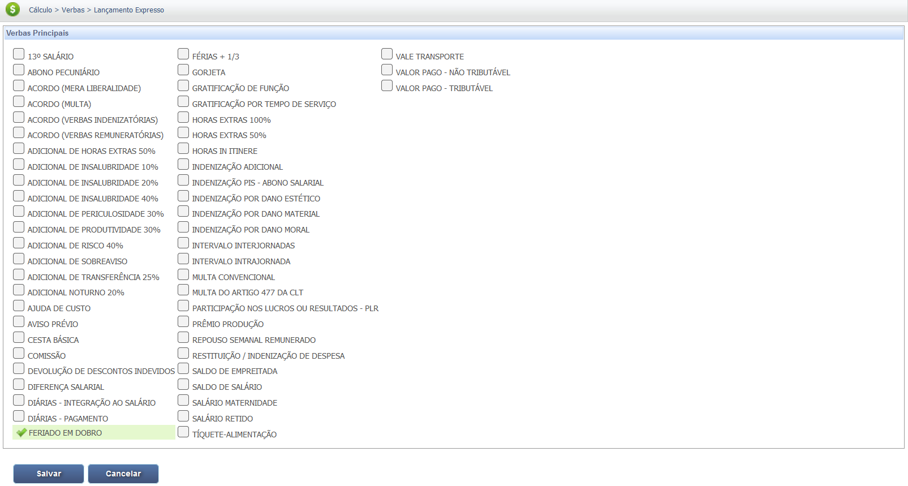
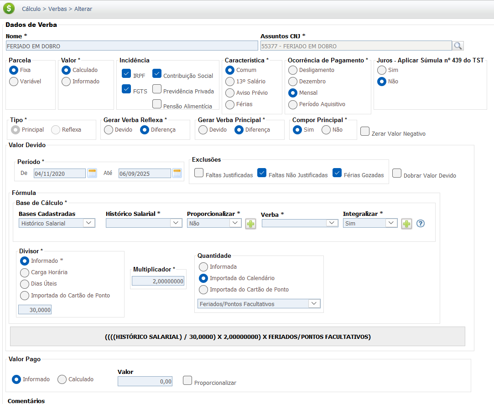
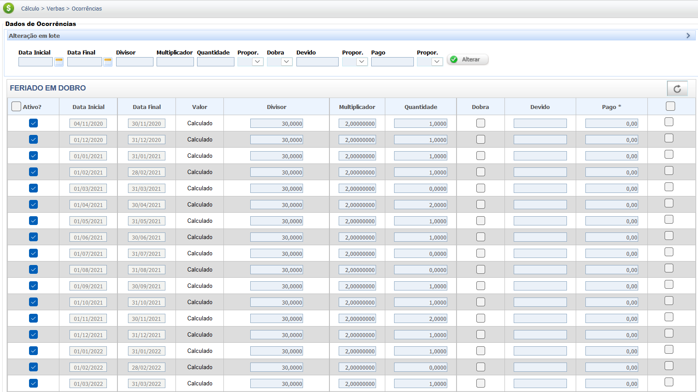

Feriados
Feriados, sejam civis ou religiosos, são dias de descanso obrigatório previstos na legislação trabalhista brasileira. O empregador não pode exigir a prestação de serviços nesses dias, a menos que haja um acordo de compensação ou previsão em convenção coletiva. Quando o trabalho em feriados é permitido, o empregado deve ser remunerado em dobro, ou seja, com um adicional de 100% sobre o valor da hora normal, sem prejuízo do descanso semanal remunerado (DSR).
O pagamento em dobro é a regra geral. Contudo, em algumas categorias, a compensação pode ser realizada com a concessão de folga compensatória em outro dia da semana.
Base Legal e Jurisprudência
A remuneração dos feriados trabalhados está amparada em importantes dispositivos legais e jurisprudenciais do direito do trabalho brasileiro. As principais são:
Fontes Normativas
Consolidação das Leis do Trabalho (CLT):
- Art. 70 (Proibição de Trabalho em Feriados):
Proíbe o trabalho em dias de feriados nacionais e religiosos, com exceções previstas na legislação específica.
Lei nº 605/49 (Repouso Semanal Remunerado e Pagamento de Feriados):
- Art. 9º (Trabalho em Feriados):
Estabelece que o trabalho em feriados civis e religiosos, quando não compensado, deve ser pago em dobro.
Jurisprudência
Pagamento em Dobro e DSR
Súmula nº 146 do TST:
"O trabalho prestado em domingos e feriados, não compensado, deve ser pago em dobro, sem prejuízo da remuneração relativa ao repouso semanal."
*(Nota: Esta súmula garante que o pagamento dobrado não substitui o direito ao Descanso Semanal Remunerado - DSR).*
Base de Cálculo e Deduções
Cálculo Bruto
Para empregados mensalista, o cálculo do feriado trabalhado é feito com base no valor do salário diário. O valor do salário diário é obtido dividindo o salário mensal por 30. O resultado deve ser multiplicado por 2, pois a legislação prevê o pagamento em dobro pelo feriado trabalhado.
No cálculo, é importante considerar a natureza salarial do pagamento, que se soma à remuneração mensal.
Fórmula e Exemplo Prático:
Um empregado com salário mensal de R$ 3.000,00 trabalhou em um feriado. Para calcular o valor a ser recebido, a fórmula é:
Valor Diário = R$ 3.000,00 / 30 = R$ 100,00
O valor a ser pago pelo feriado trabalhado será o valor diário multiplicado por 2:
Valor Feriado Trabalhado = R$ 100,00 * 2 = R$ 200,00
Se esse mesmo empregado trabalhou em 2 feriados no mês, o valor a receber por este motivo seria de R$ 400,00.
| Item | Valor |
|---|---|
| Salário Mensal | R$ 3.000,00 |
| Valor Diário | R$ 100,00 |
| Feriados Trabalhados | 1 dia |
| Valor Feriado Trabalhado | R$ 200,00 |
| Total Bruto a Pagar | R$ 200,00 |
Verbas Reflexas
A remuneração do feriado trabalhado, que deve ser paga em dobro (adicional de 100%), possui natureza **salarial** e, portanto, gera reflexos nas demais verbas trabalhistas, desde que paga com habitualidade.
| Verba Trabalhista | Reflexo do Feriado Trabalhado (Natureza Salarial) |
|---|---|
| Repouso Semanal Remunerado (RSR) | O valor do feriado trabalhado **já inclui** o DSR. Não há reflexo, pois o pagamento em dobro já contempla a remuneração do dia de folga. |
| 13º Salário | Integra a base de cálculo (desde que o trabalho em feriados seja habitual). |
| Férias + 1/3 | Integra a base de cálculo (desde que o trabalho em feriados seja habitual). |
| Aviso Prévio | Integra a base de remuneração. |
| FGTS (Depósito Mensal e Multa) | Incide sobre o valor do feriado trabalhado (e seus reflexos em 13º, Férias e Aviso Prévio). |
Atenção: O feriado trabalhado não gera reflexo em RSR e Feriados, pois a legislação (Lei 605/49 e Súmula 146 do TST) já garante o pagamento em dobro, que engloba a remuneração do dia (simulando a folga) mais o adicional de 100% pelo trabalho extraordinário. A habitualidade é o que define a integração do valor nas demais verbas rescisórias e anuais.
Calculadora (Simulação)
Utilize esta ferramenta para calcular o valor bruto dos feriados trabalhados no mês.
Cálculo Simples (Bruto)
Informe os dados para calcular o valor bruto dos feriados trabalhados (adicional de 100%).
Lançamento no PJe-Calc
A seguir, confira o passo a passo para o lançamento da verba no PJe-Calc, utilizando a opção "Expresso":
-
Acessar Verbas e Escolher Lançamento: No menu de
navegação à esquerda, clique na opção Verbas para iniciar o lançamento. Após o
comando,
será exibida a tela para escolha do Lançamento da Verba. Escolha a opção Expresso.

- Seleção da Verba: O sistema abrirá as opções de verbas, escolha a verba Feriado em Dobro e clique no botão Salvar 
-
Quadro de Verbas e Ações: O sistema exibirá um quadro
com os campos:
- Ações - contendo as opções de configurações da verba selecionada (parâmetros,
ocorrências e
exclusão)

-
- Parâmetros da Verba

-
- Ocorrências da Verba

-
- Excluir

- Verba Principal - verba selecionada para lançamento.
- Verba Reflexa - em que ao clicar no botão Exibir serão listadas todas as verbas reflexas ligadas a Verba Principal.
- Parametrização da Verba: Ao clicar no botão Parâmetros da Verba serão exibidas todas as configurações necessárias para a parametrização da Verba Principal. 
- Registro de Ocorrências: Ao clicar no botão Ocorrências da Verba serão exibidas todas as configurações necessárias para registro das ocorrências da Verba Principal. 